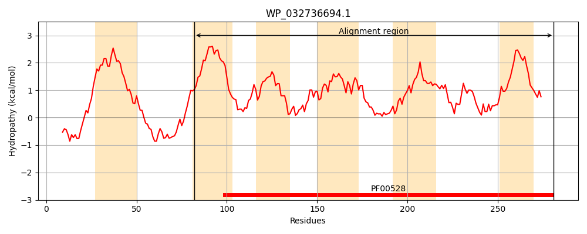
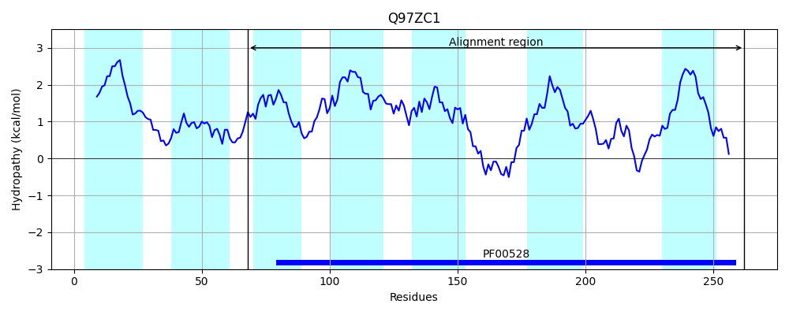
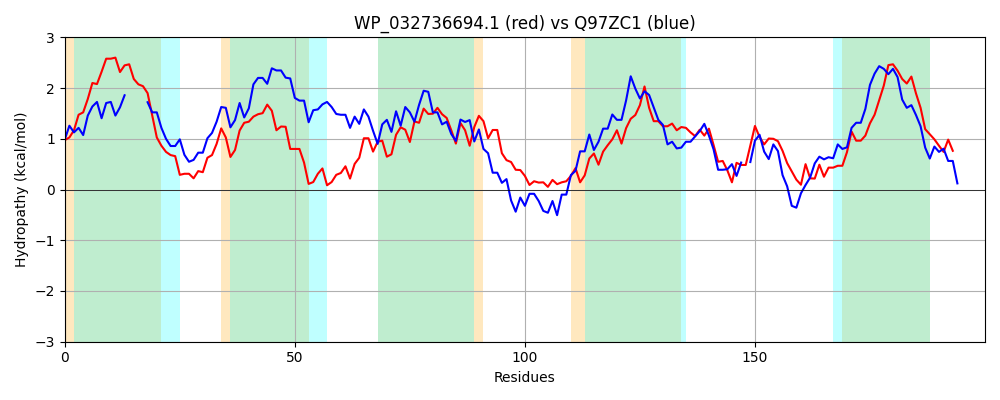

Hit Accession: Q97ZC1
Hit TCID: 3.A.1.1.15
Hit Description: gnl|BL_ORD_ID|17622 gnl|TC-DB|Q97ZC1|3.A.1.1.15 Sugar ABC transporter - Sulfolobus solfataricus.
Mach Len: 200
e:0.000000
Query TMS Count : 6
Hit TMS Count: 7
TMS-Overlap Score: 5.500000
Predicted Substrates:CHEBI:10202;alpha,alpha-trehalose
BLAST Alignment:
Score: 220 , Bit scores: 89 bits, E-value: 5.5e-21, Alignment length: 200, Percentage identity: 29
Query: 82 SLLTSVLIALLSVGVCLLISVPAGYALSRRKMPLRVLFMLLFLIPQAFPNLTVYMNVARLFYQWGLNGSIAGVVLVHSVHGLMYSVWICMAAFSSIDPLLARASRNLGAGPVYTFWHIVLPQAAPGIVAASIFVFLESLDEFTGTFFVGAPDITTLPLLLYNASMSGNYQVSSITALILLVPSLLFMVVIHKFMRPEMMA 281
SL T+ L+ ++++ +++PAGY LSR + ++L L+ P + + + +A F + L S+ G+ L ++ L + +I FSSI L +R GA + ++LP AAPGI AA + ++ S DEFT + P +TLP+ +Y GN +LI +P ++ + K++R E +A
Sbjct: 68 SLETATLVGIITIA----LAIPAGYGLSRLPRAIAYSIIILLLVTNMMPAIVIGIPIAVDFLKLHLFESVVGLALAQTLITLPLATFILQGTFSSIPIDLEHQARVDGANLFNRLFSVLLPLAAPGIAAAFLISWMFSWDEFTYAILL-IPYHSTLPVTIYQDVTRGNLLAGIAFSLIFTLPVIILTFALQKYLRGEYLA 262 | Protein Hydropathy Plots: |
|---|
|  |  |
Pairwise Alignment-Hydropathy Plot:
|
|---|
|  |